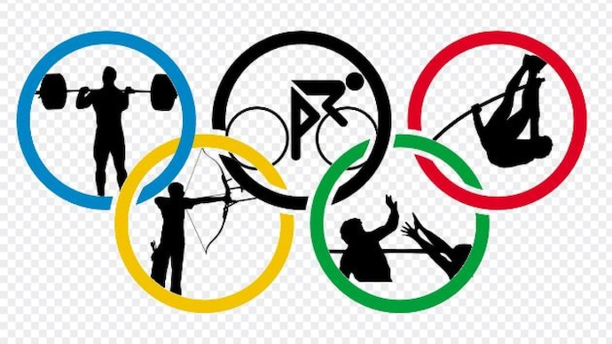
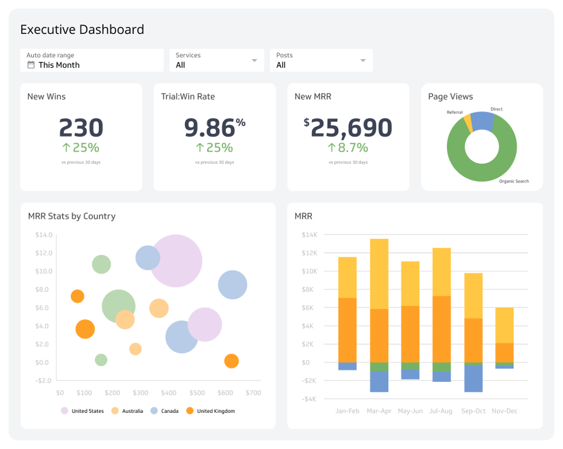

Here I performed feature engineering and used Ridge and Lasso models for prediction of sales prices for houses
In this Project I carried out feature engineering and optimization using random forest model, achieving an 85% accuracy in predicting customer churn and delivering actionable insights for informed decision-making

The dataset contains the information of atheletes in Olympics from year 1896 to 2016 all over the world. In this project I analyzed the queries for number of medals earned by the players till date from India and United States

Targeted on advising a social media client with recommendations for efficient and scalable management of resources followed by
cleaning, modelling and analysis of various datasets to uncover insights into content trends and then into informed strategic decisions

Here I Analysed data to target high-value customers based on demographics and attributes,
developing dashboards to communicate findings with visuals

In this project I extensively worked on analysing the variables which are responsible for attrition of employees such as attrition by Job role, attrition by Work life balance and average monthly income